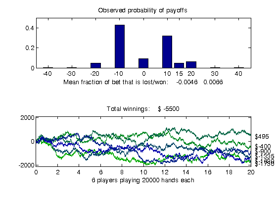

Distributed Blackjack
This demo uses the Parallel Computing Toolbox™ to play the card game of blackjack, also known as 21. We simulate a number of players that are independently playing thousands of hands at a time, and display payoff statistics. Simulating the playing of blackjack is representative of Monte Carlo analysis of financial instruments. The simulation can be done completely in parallel, except for the data collection at the end.
For details about the computations, view the code for pctdemo_setup_blackjack
Prerequisites:
Related demos:
Contents
Analyze the Sequential Problem
Because the blackjack players are independent one of another, we can simulate them in parallel. We do this as simply as possible by using dfevalasync to perform the computations. This effectively creates one task for each invocation of our task function.
Load the Demo Settings and the Data
The demo uses the default configuration when identifying the scheduler to use. The configurations documentation explains how to create new configurations and how to change the default configuration. See Customizing the Settings for the Demos in the Parallel Computing Toolbox for instructions on how to change the demo difficulty level.
config = defaultParallelConfig(); % We will not use the scheduler object returned, only difficulty % and numTasks. [difficulty, sched, numTasks] = pctdemo_helper_getDefaults();
We get the number of players and the number of hands each player plays from pctdemo_setup_blackjack. The difficulty parameter controls the number of players that we simulate. You can view the code for pctdemo_setup_blackjack for full details.
[fig, numHands, numPlayers] = pctdemo_setup_blackjack(difficulty);
Divide the Work into Smaller Tasks
We divide the simulation of the numPlayers players among the numTasks tasks. Thus, task i simulates splitPlayers{i} players.
[splitPlayers, numTasks] = pctdemo_helper_split_scalar(numPlayers, ... numTasks); fprintf(['This demo will submit a job with %d task(s) ' ... 'to the scheduler.\n'], numTasks);
This demo will submit a job with 4 task(s) to the scheduler.
Run the Simulation
We use dfevalasync to call pctdemo_task_blackjack numTasks times. Since dfevalasync requires the input arguments to the task function to be specified as cell arrays, we convert the vector splitPlayers to a cell array. You can view the code for pctdemo_task_blackjack for full details. Notice that by passing a configuration name to dfevalasync, we can use any of the supported schedulers.
startTime = clock; job = dfevalasync(@pctdemo_task_blackjack, 1, ... repmat({numHands}, numTasks, 1), ... num2cell(splitPlayers), ... 'Configuration', config); waitForState(job, 'finished');
Retrieve the Results
Let us verify that we received all the results that we expected. We throw an error if we could not obtain any results, but display a warning if we got only some of the results.
jobResults = getAllOutputArguments(job); if isempty(jobResults) taskErrorMsgs = pctdemo_helper_getUniqueErrors(job); destroy(job); error('distcomp:demo:EmptyJobOutput', ... ['Could not obtain any job results. The following error(s) ' ... 'occurred \nduring task execution:\n\n%s'], ... taskErrorMsgs); end
Collect the task results into a numHands-by-numPlayers matrix.
S = cell2mat(jobResults');
We verify that all the tasks completed successfully.
numOk = size(S, 2); if ~(numOk == numPlayers) taskErrorMsgs = pctdemo_helper_getUniqueErrors(job); warning('distcomp:demo:IncompleteJobResults', ... ['Some tasks did not finish. Results were only obtained ' ... 'for %d out of %d players. \nThe following error(s) ' ... 'occurred during task execution:\n\n%s'], ... numOk, numPlayers, taskErrorMsgs); end
We have now finished all the verifications, so we can destroy the job.
destroy(job);
Measure the Elapsed Time
The time used for the distributed simulations should be compared against the time it takes to perform the same set of calculations in the Sequential Blackjack demo. The elapsed time varies with the underlying hardware and network infrastructure.
elapsedTime = etime(clock, startTime);
fprintf('Elapsed time is %2.1f seconds\n', elapsedTime);
Elapsed time is 22.6 seconds
Plot the Results
We display the expected fraction of the bet that is won or lost in each hand, along with the confidence interval. We also show the evolution of the winnings and losses of each of the players we simulate. You can view the code for pctdemo_plot_blackjack for full details.
pctdemo_plot_blackjack(fig, S);